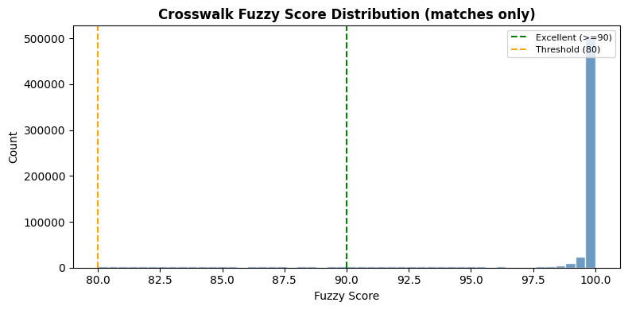
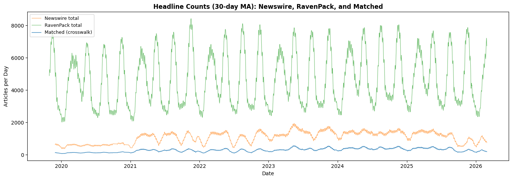
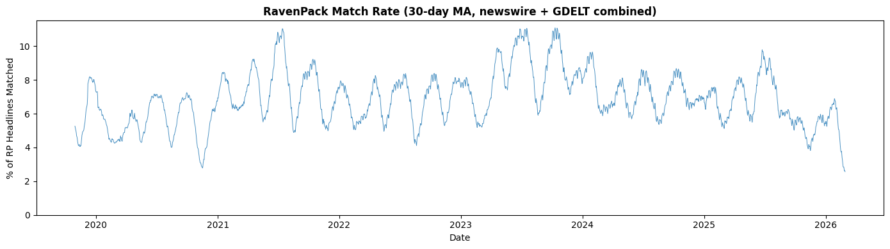
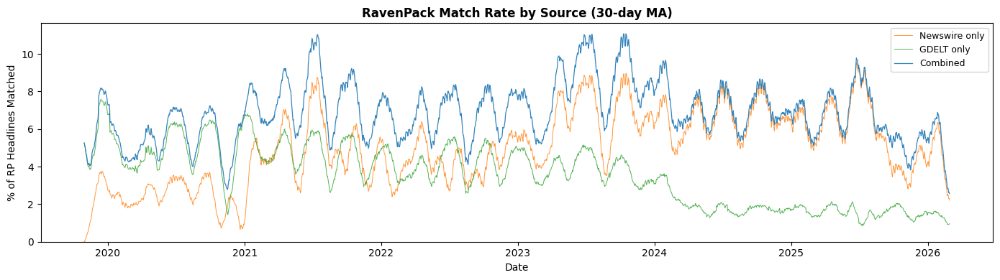

Crosswalk Quality#
The pipeline builds two crosswalks — newswire–RavenPack and
GDELT–RavenPack — by fuzzy-matching free headlines against
RavenPack using token_sort_ratio (threshold \(\geq 80\)).
This notebook evaluates both crosswalks: how many headlines matched, at what quality, which source contributes more to RavenPack coverage, and whether there are coverage gaps. Newswire-vs-RP comparisons use the full newswire crosswalk range; combined (newswire + GDELT) stats use the overlap date range where both crosswalks have data.
from pathlib import Path
import matplotlib.pyplot as plt
import numpy as np
import polars as pl
from pull_free_newswires import load_newswire_headlines
from settings import config
MA_WINDOW = 30
DATA_DIR = Path(config("DATA_DIR"))
/opt/homebrew/Caskroom/mambaforge/base/lib/python3.10/site-packages/google/api_core/_python_version_support.py:275: FutureWarning: You are using a Python version (3.10.14) which Google will stop supporting in new releases of google.api_core once it reaches its end of life (2026-10-04). Please upgrade to the latest Python version, or at least Python 3.11, to continue receiving updates for google.api_core past that date.
warnings.warn(message, FutureWarning)
Key Result: RavenPack Headline Coverage#
All statistics below are restricted to the overlap date range where both newswire and GDELT crosswalks have data, so that coverage comparisons across sources are fair.
cw = pl.read_parquet(DATA_DIR / "newswire_ravenpack_crosswalk.parquet")
gd_cw = pl.read_parquet(DATA_DIR / "gdelt_ravenpack_crosswalk.parquet")
# Fair-comparison window: overlap of both crosswalk date ranges
date_start = max(cw["date"].min(), gd_cw["date"].min())
date_end = min(cw["date"].max(), gd_cw["date"].max())
cw = cw.filter((pl.col("date") >= date_start) & (pl.col("date") <= date_end))
gd_cw = gd_cw.filter((pl.col("date") >= date_start) & (pl.col("date") <= date_end))
nw_full = load_newswire_headlines().collect()
nw_full = nw_full.with_columns(pl.col("date").cast(pl.Date))
nw_full = nw_full.filter((pl.col("date") >= date_start) & (pl.col("date") <= date_end))
rp_full = (
pl.scan_parquet(DATA_DIR / "ravenpack_djpr.parquet")
.with_columns(pl.col("timestamp_utc").cast(pl.Date).alias("date"))
.filter((pl.col("date") >= date_start) & (pl.col("date") <= date_end))
.select("date", "rp_story_id", "entity_name", "source_name", "headline")
.collect()
)
cw_rows = len(cw)
cw_date_min = date_start
cw_date_max = date_end
cw_n_dates = cw["date"].n_unique()
nw_total_urls = nw_full["source_url"].n_unique()
nw_matched_urls = cw["nw_source_url"].n_unique()
nw_match_rate = nw_matched_urls / nw_total_urls * 100
rp_total_stories = rp_full["rp_story_id"].n_unique()
rp_matched_stories = cw["rp_story_id"].n_unique()
rp_match_rate = rp_matched_stories / rp_total_stories * 100
gd_matched_stories = gd_cw["rp_story_id"].n_unique()
gd_match_rate = gd_matched_stories / rp_total_stories * 100
combined_matched_stories = pl.concat(
[
cw.select("rp_story_id"),
gd_cw.select("rp_story_id"),
]
)["rp_story_id"].n_unique()
combined_match_rate = combined_matched_stories / rp_total_stories * 100
pl.DataFrame(
{
"metric": [
"RP matched — combined",
"RP matched — newswire",
"RP matched — GDELT",
"NW headlines matched",
"Crosswalk pairs (newswire)",
"Date range (overlap)",
],
"value": [
f"{combined_match_rate:.1f}% ({combined_matched_stories:,} / {rp_total_stories:,})",
f"{rp_match_rate:.1f}% ({rp_matched_stories:,} / {rp_total_stories:,})",
f"{gd_match_rate:.1f}% ({gd_matched_stories:,} / {rp_total_stories:,})",
f"{nw_match_rate:.1f}% ({nw_matched_urls:,} / {nw_total_urls:,})",
f"{cw_rows:,}",
f"{cw_date_min} to {cw_date_max} ({cw_n_dates:,} dates)",
],
}
)
| metric | value |
|---|---|
| str | str |
| "RP matched — combined" | "10.4% (755,396 / 7,245,265)" |
| "RP matched — newswire" | "8.3% (597,870 / 7,245,265)" |
| "RP matched — GDELT" | "4.6% (336,547 / 7,245,265)" |
| "NW headlines matched" | "26.0% (643,279 / 2,478,868)" |
| "Crosswalk pairs (newswire)" | "643,624" |
| "Date range (overlap)" | "2019-10-01 to 2026-02-28 (2,23… |
1. Load Crosswalk#
print(f"Crosswalk rows: {cw_rows:,}")
print(f"Columns: {cw.columns}")
print(f"Date range: {cw_date_min} to {cw_date_max}")
print(f"Distinct dates: {cw_n_dates}")
Crosswalk rows: 643,624
Columns: ['date', 'nw_source_url', 'nw_headline', 'nw_source', 'rp_story_id', 'rp_entity_id', 'rp_entity_name', 'rp_headline', 'rp_source_name', 'fuzzy_score']
Date range: 2019-10-01 to 2026-02-28
Distinct dates: 2238
cw.head(5)
| date | nw_source_url | nw_headline | nw_source | rp_story_id | rp_entity_id | rp_entity_name | rp_headline | rp_source_name | fuzzy_score |
|---|---|---|---|---|---|---|---|---|---|
| date | str | str | str | str | str | str | str | str | f64 |
| 2019-11-01 | "https://www.prnewswire.com/new… | "A Rising Generation of Food Co… | "prnewswire" | "A2AA1388CCA802381CA92C67F8B465… | "C8257F" | "Omnicom Group Inc." | "A Rising Generation of Food Co… | "PR Newswire" | 100.0 |
| 2019-11-01 | "https://www.prnewswire.com/new… | "AAM Reports Third Quarter 2019… | "prnewswire" | "921FE9B1CC39A39E91E0A8D33840CC… | "DB23C8" | "American Axle & Manufacturing … | "AAM Reports Third Quarter 2019… | "PR Newswire" | 100.0 |
| 2019-11-01 | "https://www.prnewswire.com/new… | "AbbVie Reports Third-Quarter 2… | "prnewswire" | "03AD46FF4931F77CF135B4B04C9918… | "665D7D" | "AbbVie Inc." | "AbbVie Reports Third-Quarter 2… | "PR Newswire" | 100.0 |
| 2019-11-01 | "https://www.prnewswire.com/new… | "Aethlon Medical Announces Seco… | "prnewswire" | "DA975C44A46F40B51FC5292F4C4944… | "BA7461" | "Aethlon Medical Inc." | "Aethlon Medical Announces Seco… | "PR Newswire" | 100.0 |
| 2019-11-01 | "https://www.prnewswire.com/new… | "AIVITA Biomedical to Present a… | "prnewswire" | "805305C34624E265551C2594F0B608… | "96135F" | "AiVita Biomedical Inc." | "AIVITA Biomedical to Present a… | "PR Newswire" | 100.0 |
2. Fuzzy Score Distribution#
scores_np = cw["fuzzy_score"].to_numpy()
fig, ax = plt.subplots(figsize=(8, 4))
ax.hist(scores_np, bins=50, color="steelblue", edgecolor="white", alpha=0.8)
ax.axvline(90, color="green", linestyle="--", linewidth=1.5, label="Excellent (>=90)")
ax.axvline(80, color="orange", linestyle="--", linewidth=1.5, label="Threshold (80)")
ax.set_xlabel("Fuzzy Score")
ax.set_ylabel("Count")
ax.set_title("Crosswalk Fuzzy Score Distribution (matches only)", fontweight="bold")
ax.legend(fontsize=8)
fig.tight_layout()
plt.show()

print("Fuzzy score stats:")
print(f" Min: {scores_np.min():.1f}")
print(f" Median: {np.median(scores_np):.1f}")
print(f" Mean: {scores_np.mean():.1f}")
print(f" Max: {scores_np.max():.1f}")
print(f" >= 90: {(scores_np >= 90).sum():,} ({(scores_np >= 90).mean() * 100:.1f}%)")
print(
f" 80-89: {((scores_np >= 80) & (scores_np < 90)).sum():,} ({((scores_np >= 80) & (scores_np < 90)).mean() * 100:.1f}%)"
)
Fuzzy score stats:
Min: 80.0
Median: 100.0
Mean: 98.2
Max: 100.0
>= 90: 586,860 (91.2%)
80-89: 56,764 (8.8%)
3. Newswire Coverage#
How many newswire headlines found a RavenPack match?
print(f"Total newswire headlines: {len(nw_full):,}")
print(f"Unique newswire URLs: {nw_total_urls:,}")
print(f"Matched newswire URLs: {nw_matched_urls:,}")
print(f"Newswire match rate: {nw_match_rate:.1f}%")
Total newswire headlines: 2,480,145
Unique newswire URLs: 2,478,868
Matched newswire URLs: 643,279
Newswire match rate: 26.0%
nw_by_source = nw_full.group_by("source").agg(
pl.col("source_url").n_unique().alias("total_urls")
)
cw_by_source = cw.group_by("nw_source").agg(
pl.col("nw_source_url").n_unique().alias("matched_urls")
)
nw_coverage = (
nw_by_source.join(cw_by_source, left_on="source", right_on="nw_source", how="left")
.with_columns(pl.col("matched_urls").fill_null(0))
.with_columns(
(pl.col("matched_urls") / pl.col("total_urls") * 100).alias("match_pct")
)
.sort("total_urls", descending=True)
)
print("Newswire coverage by source:")
nw_coverage
Newswire coverage by source:
| source | total_urls | matched_urls | match_pct |
|---|---|---|---|
| str | u32 | u32 | f64 |
| "prnewswire" | 1251705 | 281321 | 22.475024 |
| "businesswire" | 680772 | 227287 | 33.386655 |
| "globenewswire" | 392707 | 120962 | 30.802099 |
| "newswireca" | 153631 | 13683 | 8.906406 |
| "edgar_8k" | 53 | 26 | 49.056604 |
4. RavenPack Coverage#
How many RavenPack stories were matched by a newswire headline?
print(f"Total RP stories in date range: {rp_total_stories:,}")
print(f"Matched RP stories: {rp_matched_stories:,}")
print(f"RP match rate: {rp_match_rate:.1f}%")
Total RP stories in date range: 7,245,265
Matched RP stories: 597,870
RP match rate: 8.3%
rp_by_source = rp_full.group_by("source_name").agg(
pl.col("rp_story_id").n_unique().alias("total_stories")
)
cw_rp_by_source = cw.group_by("rp_source_name").agg(
pl.col("rp_story_id").n_unique().alias("matched_stories")
)
rp_coverage = (
rp_by_source.join(
cw_rp_by_source, left_on="source_name", right_on="rp_source_name", how="left"
)
.with_columns(pl.col("matched_stories").fill_null(0))
.with_columns(
(pl.col("matched_stories") / pl.col("total_stories") * 100).alias("match_pct")
)
.sort("total_stories", descending=True)
)
print("RavenPack coverage by source:")
with pl.Config(tbl_rows=-1):
print(rp_coverage)
RavenPack coverage by source:
shape: (24, 4)
┌─────────────────────────────────┬───────────────┬─────────────────┬───────────┐
│ source_name ┆ total_stories ┆ matched_stories ┆ match_pct │
│ --- ┆ --- ┆ --- ┆ --- │
│ str ┆ u32 ┆ u32 ┆ f64 │
╞═════════════════════════════════╪═══════════════╪═════════════════╪═══════════╡
│ Dow Jones Newswires ┆ 4646181 ┆ 12372 ┆ 0.266283 │
│ MarketWatch ┆ 571981 ┆ 5 ┆ 0.000874 │
│ Business Wire ┆ 488601 ┆ 209312 ┆ 42.839045 │
│ PR Newswire ┆ 449488 ┆ 247294 ┆ 55.016819 │
│ GlobeNewswire ┆ 415820 ┆ 106706 ┆ 25.661584 │
│ LSE Regulatory News Service (R… ┆ 321841 ┆ 4319 ┆ 1.341967 │
│ DJ Global Press Release Wire ┆ 283566 ┆ 6870 ┆ 2.422716 │
│ Wall Street Journal ┆ 20063 ┆ 1 ┆ 0.004984 │
│ Canadian News Wire ┆ 19000 ┆ 10556 ┆ 55.557895 │
│ Hugin GlobeNewswire ┆ 11031 ┆ 356 ┆ 3.227269 │
│ DGAP News ┆ 8128 ┆ 29 ┆ 0.356791 │
│ Cision News ┆ 2211 ┆ 44 ┆ 1.99005 │
│ JSE News ┆ 2043 ┆ 1 ┆ 0.048948 │
│ BSE News ┆ 1883 ┆ 0 ┆ 0.0 │
│ Barron's ┆ 1011 ┆ 0 ┆ 0.0 │
│ Oslo Bors News ┆ 998 ┆ 4 ┆ 0.400802 │
│ Barrons ┆ 825 ┆ 0 ┆ 0.0 │
│ HK Exchange News ┆ 257 ┆ 0 ┆ 0.0 │
│ Actus News ┆ 165 ┆ 1 ┆ 0.606061 │
│ Pressetext News ┆ 84 ┆ 0 ┆ 0.0 │
│ Tensid News ┆ 58 ┆ 0 ┆ 0.0 │
│ IRW-Press News ┆ 19 ┆ 0 ┆ 0.0 │
│ News Aktuell ┆ 6 ┆ 0 ┆ 0.0 │
│ RealWire (webitpr) ┆ 5 ┆ 0 ┆ 0.0 │
└─────────────────────────────────┴───────────────┴─────────────────┴───────────┘
5. Daily Volume Overlay#
Daily count of crosswalk matches alongside total newswire and RavenPack headlines to show the matching yield over time.
cw_daily = cw.group_by("date").agg(pl.len().alias("matched")).sort("date")
nw_daily = nw_full.group_by("date").agg(pl.len().alias("nw_total")).sort("date")
rp_daily = rp_full.group_by("date").agg(pl.len().alias("rp_total")).sort("date")
nw_daily_pd = nw_daily.to_pandas().set_index("date").sort_index()
rp_daily_pd = rp_daily.to_pandas().set_index("date").sort_index()
cw_daily_pd = cw_daily.to_pandas().set_index("date").sort_index()
fig, ax = plt.subplots(figsize=(14, 5))
ax.plot(
nw_daily_pd.index,
nw_daily_pd["nw_total"].rolling(MA_WINDOW).mean(),
color="tab:orange",
alpha=0.7,
linewidth=0.8,
label="Newswire total",
)
ax.plot(
rp_daily_pd.index,
rp_daily_pd["rp_total"].rolling(MA_WINDOW).mean(),
color="tab:green",
alpha=0.7,
linewidth=0.8,
label="RavenPack total",
)
ax.plot(
cw_daily_pd.index,
cw_daily_pd["matched"].rolling(MA_WINDOW).mean(),
color="tab:blue",
alpha=0.9,
linewidth=1.0,
label="Matched (crosswalk)",
)
ax.set_xlabel("Date")
ax.set_ylabel("Articles per Day")
ax.set_title(
f"Headline Counts ({MA_WINDOW}-day MA): Newswire, RavenPack, and Matched",
fontweight="bold",
)
ax.legend(fontsize=9)
fig.tight_layout()
plt.show()

Daily RavenPack Match Rate#
For each day, what fraction of RavenPack headlines were matched by at least one scraped source (newswire or GDELT)?
# Union of matched RP story IDs from both crosswalks, by date
combined_matched = pl.concat(
[
cw.select("date", "rp_story_id"),
gd_cw.select("date", "rp_story_id"),
]
).unique(subset=["date", "rp_story_id"])
combined_daily = (
combined_matched.group_by("date")
.agg(pl.col("rp_story_id").n_unique().alias("matched"))
.sort("date")
)
match_rate_daily = (
rp_daily.join(combined_daily, on="date", how="left")
.with_columns(pl.col("matched").fill_null(0))
.with_columns((pl.col("matched") / pl.col("rp_total") * 100).alias("match_pct"))
.sort("date")
)
match_rate_pd = match_rate_daily.to_pandas().set_index("date").sort_index()
fig, ax = plt.subplots(figsize=(14, 4))
ax.plot(
match_rate_pd.index,
match_rate_pd["match_pct"].rolling(MA_WINDOW).mean(),
color="tab:blue",
linewidth=0.7,
alpha=0.8,
)
ax.set_xlabel("Date")
ax.set_ylabel("% of RP Headlines Matched")
ax.set_title(
f"RavenPack Match Rate ({MA_WINDOW}-day MA, newswire + GDELT combined)",
fontweight="bold",
)
ax.set_ylim(0, None)
fig.tight_layout()
plt.show()

Coverage by Source: Newswire vs GDELT#
Which scraped source contributes more to RavenPack coverage? This chart separates the combined match rate into individual contributions from newswire and GDELT headlines.
# Per-source daily match counts
nw_matched_daily = (
cw.select("date", "rp_story_id")
.unique(subset=["date", "rp_story_id"])
.group_by("date")
.agg(pl.col("rp_story_id").n_unique().alias("nw_matched"))
.sort("date")
)
gd_matched_daily = (
gd_cw.select("date", "rp_story_id")
.unique(subset=["date", "rp_story_id"])
.group_by("date")
.agg(pl.col("rp_story_id").n_unique().alias("gd_matched"))
.sort("date")
)
source_daily = (
rp_daily.join(nw_matched_daily, on="date", how="left")
.join(gd_matched_daily, on="date", how="left")
.join(combined_daily, on="date", how="left")
.with_columns(
pl.col("nw_matched").fill_null(0),
pl.col("gd_matched").fill_null(0),
pl.col("matched").fill_null(0),
)
.with_columns(
(pl.col("nw_matched") / pl.col("rp_total") * 100).alias("nw_pct"),
(pl.col("gd_matched") / pl.col("rp_total") * 100).alias("gd_pct"),
(pl.col("matched") / pl.col("rp_total") * 100).alias("combined_pct"),
)
.sort("date")
)
source_daily_pd = source_daily.to_pandas().set_index("date").sort_index()
fig, ax = plt.subplots(figsize=(14, 4))
ax.plot(
source_daily_pd.index,
source_daily_pd["nw_pct"].rolling(MA_WINDOW).mean(),
color="tab:orange",
linewidth=0.7,
alpha=0.8,
label="Newswire only",
)
ax.plot(
source_daily_pd.index,
source_daily_pd["gd_pct"].rolling(MA_WINDOW).mean(),
color="tab:green",
linewidth=0.7,
alpha=0.8,
label="GDELT only",
)
ax.plot(
source_daily_pd.index,
source_daily_pd["combined_pct"].rolling(MA_WINDOW).mean(),
color="tab:blue",
linewidth=0.9,
alpha=0.9,
label="Combined",
)
ax.set_xlabel("Date")
ax.set_ylabel("% of RP Headlines Matched")
ax.set_title(f"RavenPack Match Rate by Source ({MA_WINDOW}-day MA)", fontweight="bold")
ax.set_ylim(0, None)
ax.legend(fontsize=9)
fig.tight_layout()
plt.show()

# Summary: average match rate contribution by source
avg_nw = source_daily["nw_pct"].mean()
avg_gd = source_daily["gd_pct"].mean()
avg_combined = source_daily["combined_pct"].mean()
print("Average daily match rate:")
print(f" Newswire only: {avg_nw:.1f}%")
print(f" GDELT only: {avg_gd:.1f}%")
print(f" Combined: {avg_combined:.1f}%")
print(f" GDELT uplift: {avg_combined - avg_nw:.1f} pp over newswire alone")
Average daily match rate:
Newswire only: 5.0%
GDELT only: 3.5%
Combined: 6.9%
GDELT uplift: 1.9 pp over newswire alone
Conclusion: GDELT is the larger contributor to RavenPack headline coverage. Although only ~7% of GDELT’s own headlines match RavenPack (because GDELT draws from the open web, not wire services), GDELT’s sheer volume — hundreds of thousands of articles per day — means it still covers more of the RavenPack universe than the scraped newswires do. Newswire headlines have a higher per-headline match rate (they come from the same wire services RavenPack uses), but their smaller volume limits their overall RavenPack coverage.
In short: newswire matches are more precise; GDELT matches are more numerous. Both sources are needed for maximum coverage.
Data gap check#
Flag months with zero or very few headlines in either source.
date_min = min(nw_full["date"].min(), rp_full["date"].min(), cw["date"].min())
date_max = max(nw_full["date"].max(), rp_full["date"].max(), cw["date"].max())
all_months = pl.date_range(
date_min.replace(day=1),
date_max.replace(day=1),
interval="1mo",
eager=True,
).alias("month")
nw_monthly = (
nw_full.with_columns(pl.col("date").dt.truncate("1mo").alias("month"))
.group_by("month")
.agg(pl.len().alias("nw_count"), pl.col("date").n_unique().alias("nw_days"))
.sort("month")
)
rp_monthly = (
rp_full.with_columns(pl.col("date").dt.truncate("1mo").alias("month"))
.group_by("month")
.agg(pl.len().alias("rp_count"), pl.col("date").n_unique().alias("rp_days"))
.sort("month")
)
cw_gap = (
pl.DataFrame({"month": all_months})
.join(nw_monthly, on="month", how="left")
.join(rp_monthly, on="month", how="left")
.fill_null(0)
.sort("month")
)
sparse_months = cw_gap.filter((pl.col("nw_count") < 50) | (pl.col("rp_count") < 50))
print(f"Months with < 50 headlines in either source: {len(sparse_months)}")
if len(sparse_months) > 0:
print(sparse_months)
else:
print("No months with significant gaps detected.")
Months with < 50 headlines in either source: 1
shape: (1, 5)
┌────────────┬──────────┬─────────┬──────────┬─────────┐
│ month ┆ nw_count ┆ nw_days ┆ rp_count ┆ rp_days │
│ --- ┆ --- ┆ --- ┆ --- ┆ --- │
│ date ┆ u32 ┆ u32 ┆ u32 ┆ u32 │
╞════════════╪══════════╪═════════╪══════════╪═════════╡
│ 2019-10-01 ┆ 0 ┆ 0 ┆ 161739 ┆ 31 │
└────────────┴──────────┴─────────┴──────────┴─────────┘
6. Bottom Line#
GDELT is the larger contributor to RavenPack headline coverage despite its low per-headline match rate (~7%), because its massive daily volume compensates. Scraped newswires have a higher per-headline match rate (same wire services as RavenPack) but smaller total volume. Both sources are needed for maximum coverage.
scores_np_ = cw["fuzzy_score"].to_numpy()
pl.DataFrame(
{
"metric": [
"RP matched — combined",
"RP matched — newswire",
"RP matched — GDELT",
"NW headlines matched",
"Newswire crosswalk pairs",
"Median fuzzy score (newswire)",
"Avg. daily RP coverage — newswire only",
"Avg. daily RP coverage — GDELT only",
"Avg. daily RP coverage — combined",
"Date range (overlap)",
],
"value": [
f"{combined_match_rate:.1f}% ({combined_matched_stories:,} / {rp_total_stories:,})",
f"{rp_match_rate:.1f}% ({rp_matched_stories:,} / {rp_total_stories:,})",
f"{gd_match_rate:.1f}% ({gd_matched_stories:,} / {rp_total_stories:,})",
f"{nw_match_rate:.1f}% ({nw_matched_urls:,} / {nw_total_urls:,})",
f"{cw_rows:,} across {cw_n_dates:,} dates",
f"{np.median(scores_np_):.1f} (threshold: 80)",
f"{avg_nw:.1f}%",
f"{avg_gd:.1f}%",
f"{avg_combined:.1f}%",
f"{cw_date_min} to {cw_date_max}",
],
}
)
| metric | value |
|---|---|
| str | str |
| "RP matched — combined" | "10.4% (755,396 / 7,245,265)" |
| "RP matched — newswire" | "8.3% (597,870 / 7,245,265)" |
| "RP matched — GDELT" | "4.6% (336,547 / 7,245,265)" |
| "NW headlines matched" | "26.0% (643,279 / 2,478,868)" |
| "Newswire crosswalk pairs" | "643,624 across 2,238 dates" |
| "Median fuzzy score (newswire)" | "100.0 (threshold: 80)" |
| "Avg. daily RP coverage — newsw… | "5.0%" |
| "Avg. daily RP coverage — GDELT… | "3.5%" |
| "Avg. daily RP coverage — combi… | "6.9%" |
| "Date range (overlap)" | "2019-10-01 to 2026-02-28" |